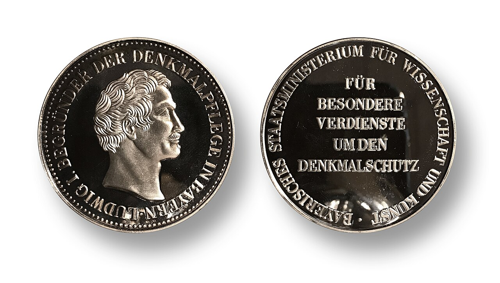
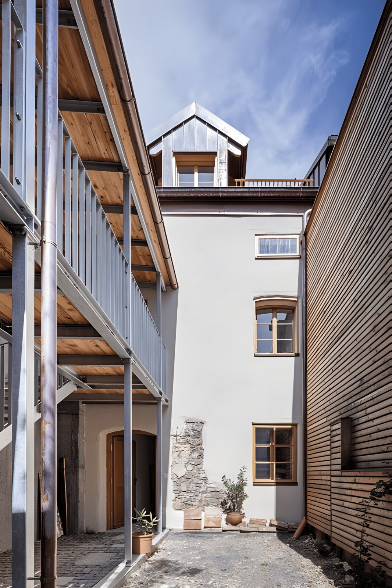
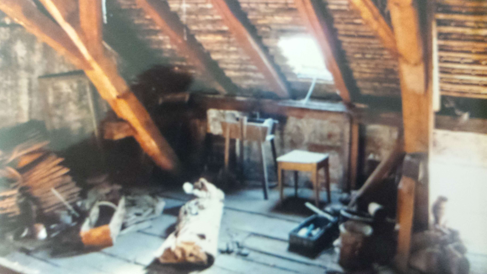
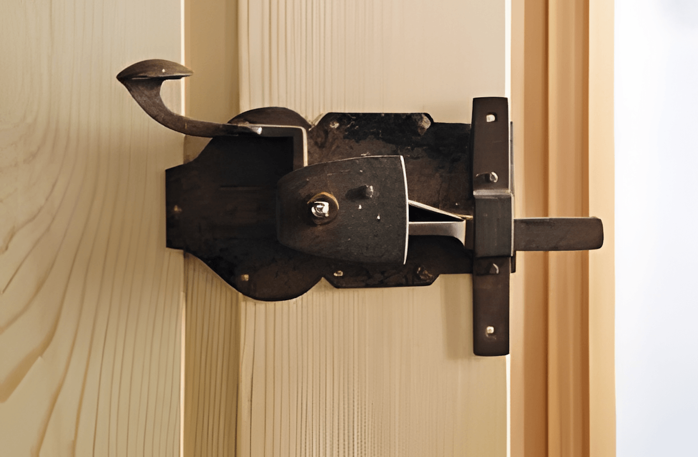

Auszeichnung & Ehrung
Herausragende Sanierungskultur, die historische Substanzen wahrt: Für die vorbildliche Instandsetzung unseres Biedermeier-Handwerkerhauses von 1822 wurden Ulrike und Roland Münzer mit der Denkmalschutzmedaille des Bayerischen Staatsministeriums geehrt.



Behutsame Ergänzung
Um Eingriffe in die historische Substanz des Haupthauses zu minimieren, entstand im Innenhof ein dezenter Anbau für die moderne Haustechnik. Ein freigelegtes Mauerwerk im Hof bewahrt die Spuren der Baugeschichte.
Erhalt der historischen Raumstruktur
Trotz jahrelangen Leerstands blieb die Substanz des 1822 erbauten Gebäudes weitgehend intakt. Unpassende spätere Einbauten wurden zurückgebaut, um die ursprüngliche Balkenstruktur und Raumaufteilung freizulegen.


Liebe zum Detail & Originalbeschläge
Historische Beschläge wurden gesichert, fachgerecht aufgearbeitet oder durch originale Sammlerstücke ergänzt. Kombiniert mit regionalen Materialien wie Fichten- und Eichenholz lebt traditionelle Handwerkskunst fort.